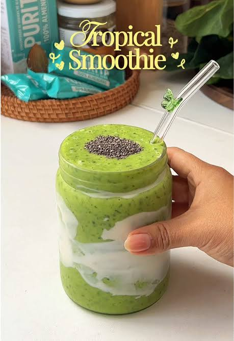
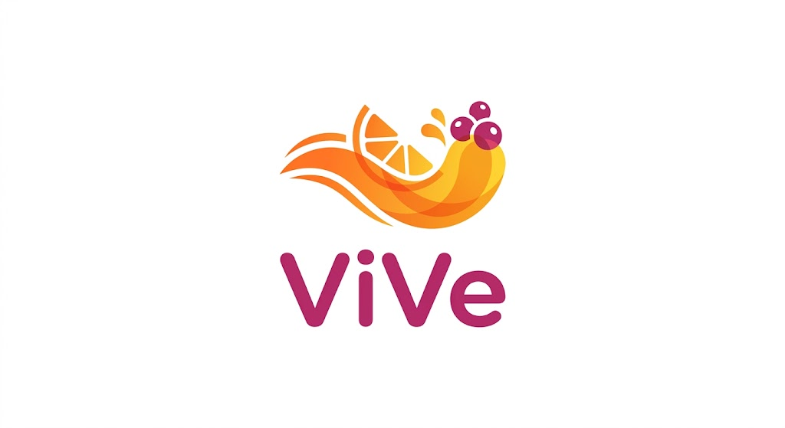
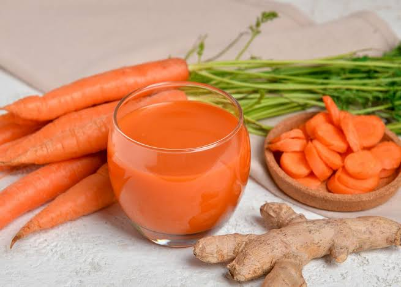
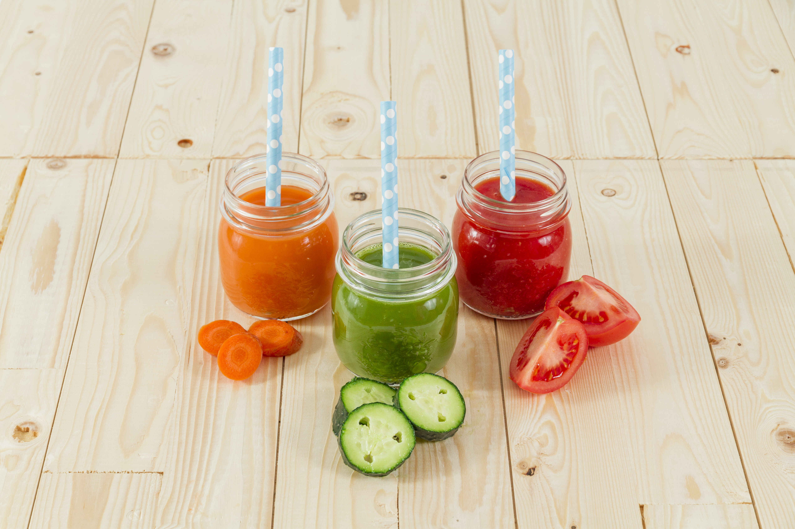
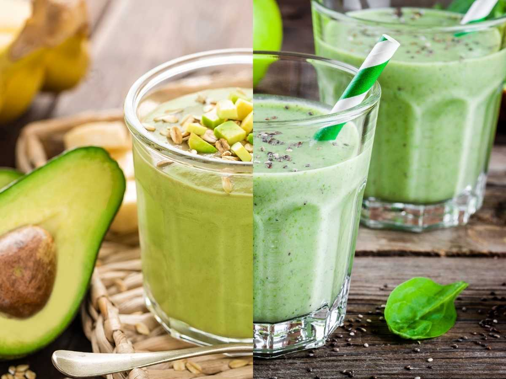
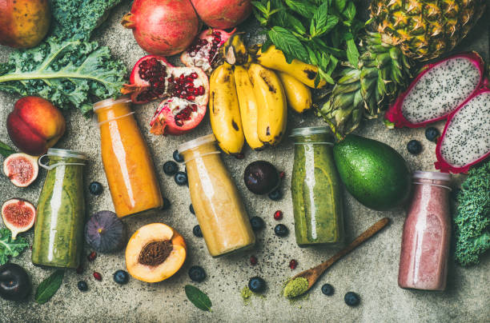
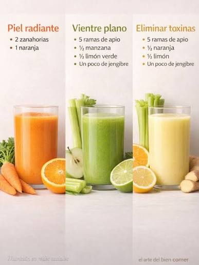
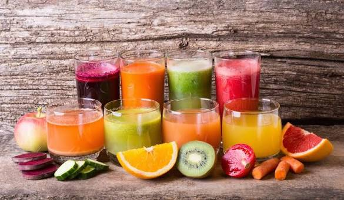
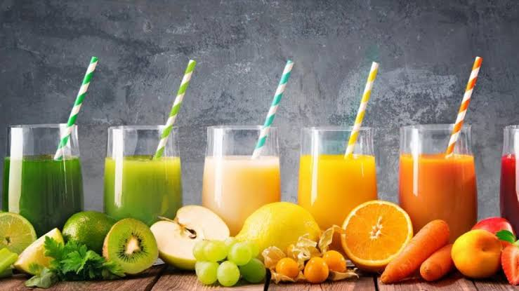

Jugo Verde Energía
Refrescante combinación de espinaca con piña para empezar el día cargado de vitalidad.

Te ofrecemos alternativas frescas y prácticas para incorporar más frutas y verduras a tu alimentación diaria, promoviendo bienestar, energía y naturalidad.
Ver Productos
Opciones naturales preparadas al instante para tu día a día

Refrescante combinación de espinaca con piña para empezar el día cargado de vitalidad.

Mezcla frutal de pepino, manzana y frutas de temporada con un toque fresco.

Bebida ligera y balanceada elaborada con apio, limón y verduras seleccionadas.

Elige tus ingredientes favoritos y crea la combinación perfecta a tu medida.
Utilizamos frutas y verduras frescas seleccionadas para ofrecerte la máxima calidad.
Combinaciones únicas y adaptadas a frutas de temporada para todos los gustos.
Una alternativa rápida y fácil de llevar para complementar tu rutina diaria.
Puedes personalizar los ingredientes de tu bebida según tus necesidades.


